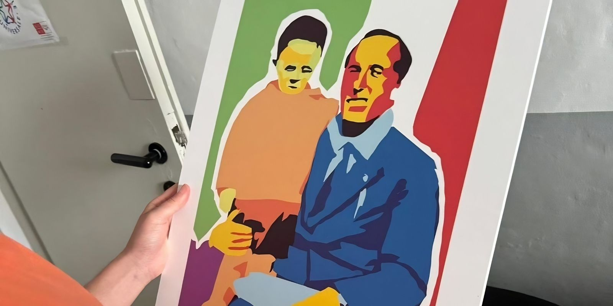

2024
Art Direction, Poster Design
Illustrator, Photoshop, Procreate
This project was developed during my Universal Civil Service experience and commissioned by SOMS Settimo Torinese, ANPI Settimo Torinese, and CGIL for the centenary of the assassination of Giacomo Matteotti.
The objective was to create a visual campaign capable of communicating an important historical event to younger audiences without relying on traditional commemorative aesthetics.
The challenge was finding a balance between historical respect and contemporary visual communication.
Since political and historical topics are often presented through institutional imagery, the posters needed to feel visually immediate, emotionally engaging, and culturally accessible for new generations.
The concept started from the desire to reinterpret historical memory through a contemporary pop-inspired aesthetic.
I wanted the posters to feel energetic and visually impactful rather than distant or purely documentary.
The visual language draws inspiration from pop art, political screen printing, and editorial illustration.
Historical photographs connected to Giacomo Matteotti were transformed into stylized graphic illustrations using bold color palettes, simplified forms, and strong visual contrasts.
The goal was to create a bridge between past and present, transforming archival imagery into something emotionally accessible, contemporary, and visually memorable.
The final series of posters introduces a vibrant and recognizable visual identity centered around stylized reinterpretations of historical imagery.
The use of vivid colors, flat shapes, and graphic simplification creates a contemporary visual language capable of functioning both as cultural communication and public event promotion.
Each composition balances graphic experimentation with historical clarity, preserving the emotional weight of the subject while presenting it through a modern visual lens.
The project successfully transforms archival and political imagery into a more accessible and engaging form of communication, helping keep the memory of Giacomo Matteotti alive through contemporary design.